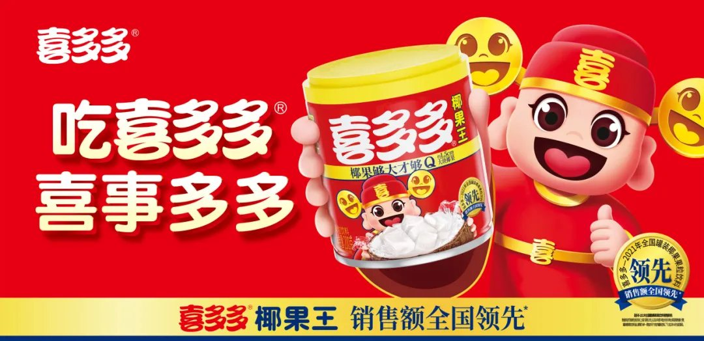
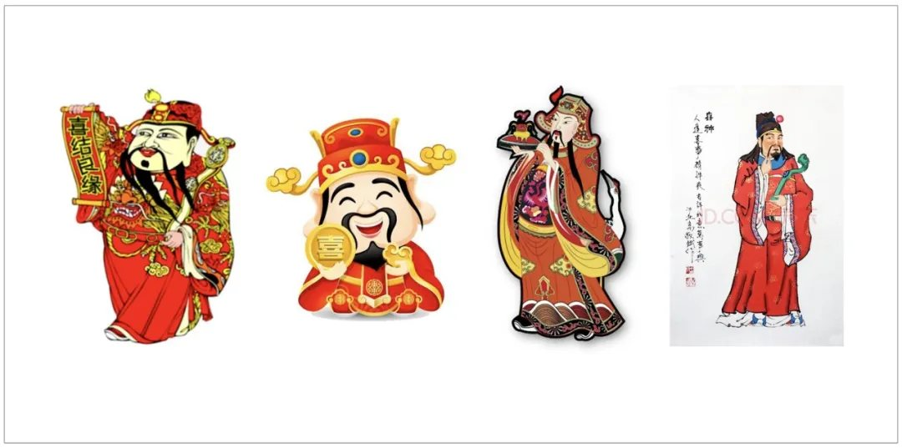
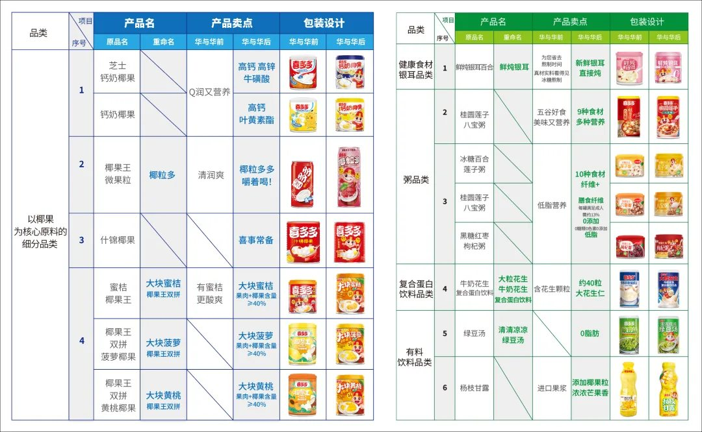

01 · 课题
老品牌需要的不是换新，而是重新找到增长原点
喜多多已有市场基础，但原有品牌与产品信息没有形成清晰合力。项目首先回到品牌名称和消费者认知，寻找能够长期统领产品与传播的核心。

02 · 文化
用“喜”建立超级符号与品牌语言
“喜多多”天然连接中国人的喜庆场景。项目围绕喜文化建立视觉符号和语言，让品牌不只描述产品，也能够进入婚庆、节庆和团圆等共同生活场景。

03 · 产品
让产品开发服从品牌战略
产品整理不是简单合并SKU，而是用5大品类、10大系列重新组织消费者选择，并以重点产品建立清晰的购买理由。

04 · 经营
用品牌活动把“喜”变成长期习俗
围绕喜文化设置持续的品牌活动，使传播不再依赖零散创意。每一次活动都重复相同文化资产，并为渠道和产品提供共同主题。

05 · 结果
从地方认知走向更大的市场表达
文化、符号、产品与活动被统一后，喜多多获得了一套可以跨区域复制的品牌表达，地方基础由此转化为全国化的起点。